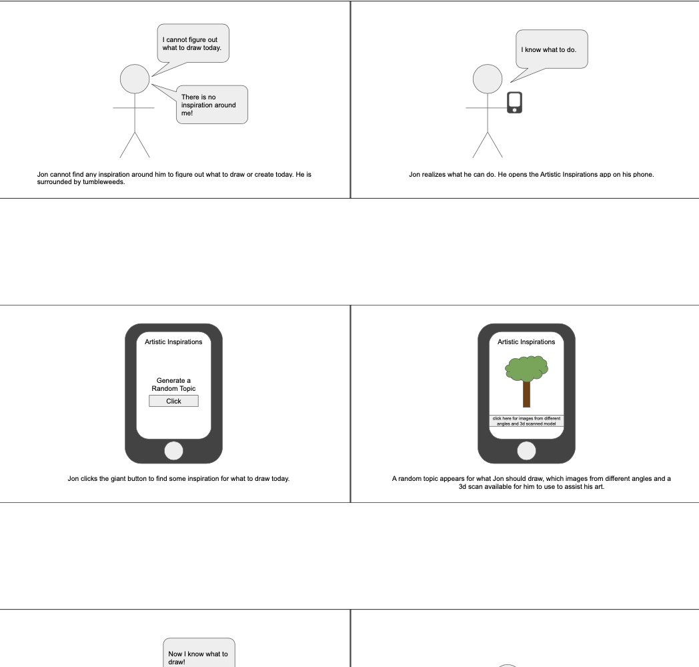
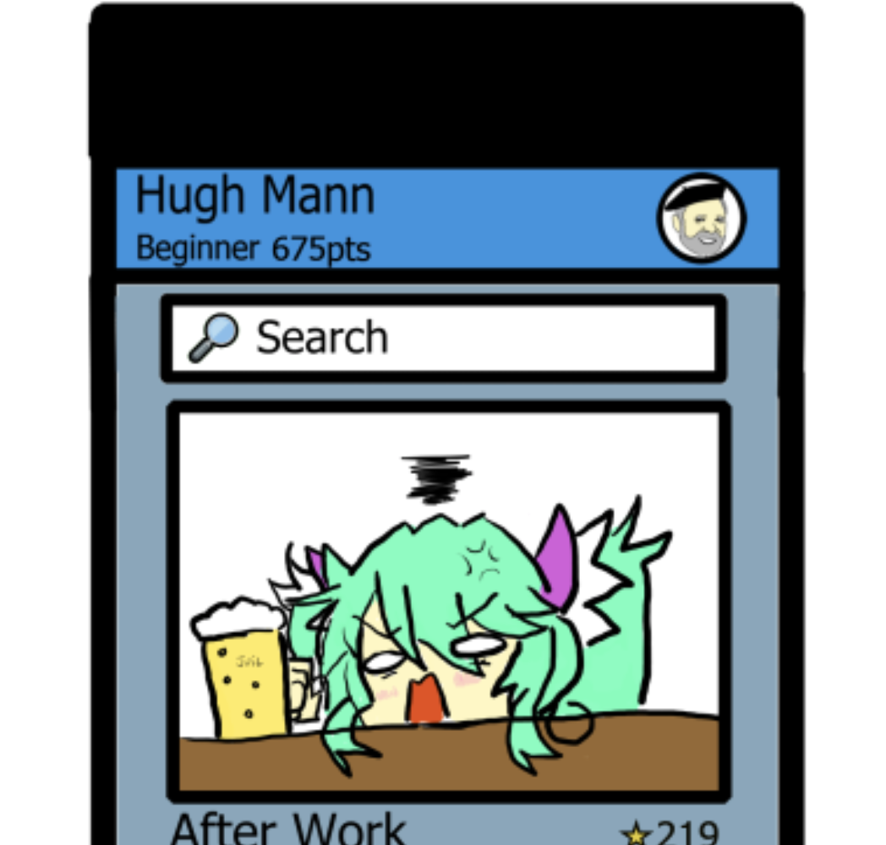
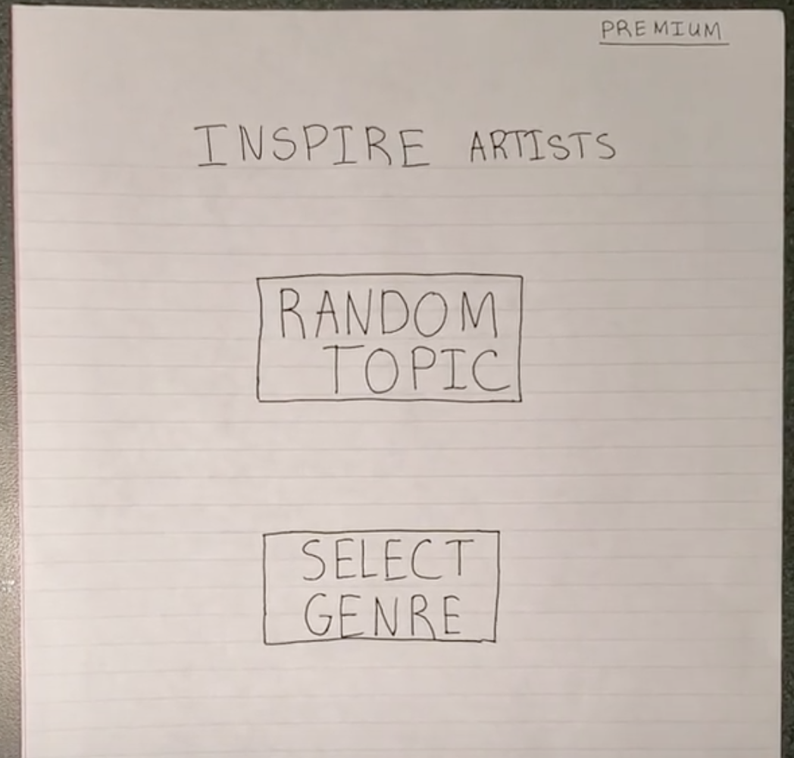

Problem Statement: Artistic Inspirations

Users (i.e. artists) are finding it time consuming and difficult to go out of their way to find new topics and appropriate references. At best they continue to draw, paint, and sculpt based on past influences, stagnating their growth as an artist, and some even choose not to practice. Our solution must provide users a randomly generated topic and appropriate reference materials.
Affinity Diagram: Artistic Inspirations

My group and I brainstromed how to bring our idea to life and everything associated to artists.
Persona: 4 Personas for Artistic Inspirations

4 Personas for typical Artistic Inspirations app users.
Storybard: 4 Storyboards for Artistic Inspirations
4 comic strips that show the need for an Artistic Inspirations app.
Sketches: Inspire Me app
Sketches of potential solutions for the artistic inspirations app.
Paper Prototype: Inspire Me app
A Prototype on Paper of the Inspire Me app that we can use to ideate.